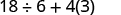
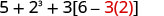
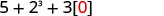
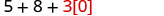
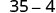
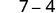
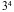
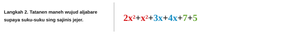

A10 · Elementary Algebra 2e · 1.2
Basa Jawa padinan · ngoko
Basa Aljabar
Four complete instructional source sections of module m82453. This is a partial book and partial module, not an entire chapter. Source exercises and supplied answers retain their IDs; open each answer only when ready.
Ayo Nganggo Variabel lan Tandha Aljabar
| Umur Greg | Umur Alex |
|---|---|
| Operasi | Notasi | Diwaca: | Asile… |
|---|---|---|---|
| Panambahan | a ditambah b | gunggung a lan b | |
| Pangurangan | a dikurangi b | selisih a lan b | |
| Ping-pingan | a ping b | asil ping-pingan a lan b | |
| Paran | a dipara b | asil paran a lan b; a kuwi wilangan sing dipara, lan b jenenge pembagi |
- Selisih 9 lan 2 tegese njupuk 2 saka 9, utawa 9 dikurangi 2. Yen ditulis nganggo tandha, dadi
- Asil ping-pingan 4 lan 8 tegese ngitung 4 ping 8, utawa 4 ping 8. Yen ditulis nganggo tandha, dadi
| Tandha Bandhingan | Wacane |
|---|---|
| a ora padha karo b | |
| a < b | a luwih cilik tinimbang b |
| a luwih cilik utawa padha karo b | |
| a > b | a luwih gedhé tinimbang b |
| a luwih gedhé utawa padha karo b |
Tuladha saka sumber
Wangsulan saka sumber
Cara Ngrampungake
| Wujud Aljabar | Tembung-tembung | Padanan Frasa Basa Indonesia |
|---|---|---|
| 3 ditambah 5 | gunggung telu lan lima | |
| n dikurangi siji | selisih n lan siji | |
| 6 ping 7 | asil ping-pingan enem lan pitu | |
| x dipara y | asil paran x lan y |
| Persamaan | Padanan Ukara Basa Indonesia |
|---|---|
| Gunggung telu lan lima padha karo wolu. | |
| n dikurangi siji padha karo patbelas. | |
| Asil ping-pingan enem lan pitu padha karo patang puluh loro. | |
| x padha karo sèket telu. | |
| y ditambah sanga padha karo loro y dikurangi telu. |
Tuladha saka sumber
Wangsulan saka sumber
Cara Ngrampungake
ⓐ |
Iki kuwi persamaan—rong wujud aljabar digandhengake nganggo tandha padha karo. |
ⓑ |
Iki kuwi wujud aljabar—ora ana tandha padha karo. |
ⓒ |
Iki kuwi wujud aljabar—ora ana tandha padha karo. |
ⓓ |
Iki kuwi persamaan—rong wujud aljabar digandhengake nganggo tandha padha karo. |
Katrangan gambar
Ana angka loro karo angka telu sing ditulis ing sisih tengen ndhuwur, jenenge superskrip. Ana panah nuding angka loro kanthi tulisan “wilangan dhasar”, lan panah liyane nuding angka telu ing ndhuwur kanthi tulisan “eksponen”. Tegese, gawe asil ping-pingan saka telung faktor sing saben-saben padha karo 2, yaiku 2 ping 2 ping 2.
- “a kuadrat”
- “a kubik”
| Wujud Aljabar | Nganggo Tembung-tembung |
|---|---|
| 7 pangkat loro utawa 7 kuadrat | |
| 5 pangkat telu utawa 5 kubik | |
| 9 pangkat papat | |
| pangkat lima |
Tuladha saka sumber
Wangsulan saka sumber
Cara Ngrampungake
| Tulisen kabeh faktor sing dipingake. | |
| Pingna saka kiwa menyang tengen. | |
| Pingna. | |
| Pingna. | 81 |
Gawe Wujud Aljabar Luwih Prasaja nganggo Urutan Ngetung
Tuladha saka sumber
Wangsulan saka sumber
Cara Ngrampungake
 Katrangan gambarAna wujud matematika 4+3•7 kanthi tulisan ireng ing latar putih. |
|
| Apa ana kurung? Ora. | |
| Apa ana eksponen? Ora. | |
| Apa ana ping-pingan utawa paran? Ya. | |
| Pingna luwih dhisik. |  Katrangan gambarAna wujud matematika '4+3•7' ing latar putih. Angka 4 lan tandha tambah wernane ireng, nanging angka 3, titik ping-pingan, lan angka 7 wernane abang. |
| Gunggungen. |  Katrangan gambarGambar iki nuduhake wujud matematika prasaja '4+21', tulisane ireng ing latar putih. |
 Katrangan gambarAngka 25 ditampilake nganggo tulisan klawu peteng ing latar putih polos. |
 Katrangan gambarWujud matematika nuduhake gunggung 4 lan 3 ing njero kurung sing dipingake karo 7. Wujude ditulis (4 + 3)·7. |
|
| Apa ana kurung? Ya. |  Katrangan gambarWujud matematika nuduhake (4+3) dipingake karo 7. Kabeh bagean (4+3), kalebu kurung lan tandha tambah, wernane abang; titik ping-pingan lan angka 7 wernane peteng. |
| Gawe bagean ing njero kurung luwih prasaja. |  Katrangan gambarAna wujud (7)7 tanpa titik ping-pingan. Angka 7 sing kapisan ana ing njero kurung lan wernane abang; kurung lan angka 7 sing kapindho wernane peteng. (7) sing jejer karo 7 tegese dipingake. |
| Apa ana eksponen? Ora. | |
| Apa ana ping-pingan utawa paran? Ya. | |
| Pingna. |  Katrangan gambarAngka '49' katon cetha ing latar putih polos, nganggo tulisan klawu peteng utawa ireng sing rada burem. |
Tuladha saka sumber
Wangsulan saka sumber
Cara Ngrampungake
| Kurung? Ya, kurangi luwih dhisik. |  Katrangan gambarWujud matematika nuduhake 18 dipara 6, ditambah 4 dipingake karo 3, yaiku 18 ÷ 6 + 4(3). |
| Eksponen? Ora. | |
| Ping-pingan utawa paran? Ya. | Katrangan gambarAna wujud matematika 18 ÷ 6 + 4(3) ing latar putih kanggo nuduhake urutan ngetung. Bagean paran lan ping-pingan wernane abang, nanging tandha tambah ing antarane wernane peteng. |
| Para luwih dhisik amarga ping-pingan lan paran ditindakake saka kiwa menyang tengen. |  Katrangan gambarAna wujud matematika '3 + 4(3)', bagean '4(3)' diwenehi warna abang kanggo nuduhake yen ping-pingan ditindakake sadurunge panambahan manut urutan ngetung. |
| Isih ana ping-pingan utawa paran? Ya. | |
| Pingna. |  Katrangan gambarAna wujud matematika prasaja '3 + 12' nganggo tulisan peteng sing cetha ing latar putih, minangka soal panambahan. |
| Isih ana ping-pingan utawa paran? Ora. | |
| Ana panambahan utawa pangurangan? Ya. | Katrangan gambarAngka '15' ditampilake nganggo warna klawu peteng ing latar putih. |
Tuladha saka sumber
Wangsulan saka sumber
Cara Ngrampungake
![Ana wujud matematika kanthi wilangan lan operasi panambahan, pangurangan, pangkat, lan ping-pingan sing ditata nganggo kurung biasa lan siku: 5 + 2^3 + 3[6 - 3(4 - 2)].](assets/a10-order-operations/CNX_ElemAlg_Figure_01_02_008a_img_new.jpg) Katrangan gambarAna wujud matematika kanthi wilangan lan operasi panambahan, pangurangan, pangkat, lan ping-pingan sing ditata nganggo kurung biasa lan siku: 5 + 2^3 + 3[6 - 3(4 - 2)]. |
|
| Apa ana kurung (utawa tandha panglumpukan liyane)? Ya. | |
| Gatekna kurung biasa ing njero kurung siku. | ![Soal matematika nuduhake wujud petungan 5 + 2^3 + 3[6 - 3(4 - 2)]. Pangurangan ing kurung paling njero, '4 - 2', diwenehi warna abang.](assets/a10-order-operations/CNX_ElemAlg_Figure_01_02_008b_img_new.jpg) Katrangan gambarSoal matematika nuduhake wujud petungan 5 + 2^3 + 3[6 - 3(4 - 2)]. Pangurangan ing kurung paling njero, '4 - 2', diwenehi warna abang. |
| Kurangi. |  Katrangan gambarWujud matematika unine 5 + 2^3 + 3[6 - 3(2)]. Bagean '3(2)' diwenehi warna abang kanggo nuduhake langkah sing lagi ditindakake. |
| Terusna ing njero kurung siku lan pingna. |  Katrangan gambarWujud matematika nuduhake 5 ditambah 2 kubik ditambah 3 dipingake karo besaran 6 dikurangi 6, lan angka 6 kapindho diwenehi warna abang. |
| Terusna ing njero kurung siku lan kurangi. |  Katrangan gambarWujud matematika nuduhake '5 + 2^3 + 3[0]'. Angka 0 ing njero kurung siku diwenehi warna abang. |
| Wujud aljabar ing njero kurung siku ora perlu digawe luwih prasaja maneh. | |
| Apa ana eksponen? Ya. |  Katrangan gambarWujud matematika nuduhake 5 ditambah 2 pangkat 3, ditambah 3 dipingake karo 0. |
| Gawe wujud pangkat luwih prasaja. |  Katrangan gambarAna wujud matematika '5 + 8 + 3[0]' ing latar putih. Bagean '3[0]' diwenehi warna abang kanggo nuduhake bagean sing lagi ditindakake. |
| Apa ana ping-pingan utawa paran? Ya. | |
| Pingna. |  Katrangan gambarGambar nuduhake wujud matematika 5+8+0. Angka 5 lan 8 karo tandha tambah kapisan wernane abang, nanging tandha tambah kapindho lan angka 0 wernane ireng. |
| Apa ana panambahan utawa pangurangan? Ya. | |
| Gunggungen. |  Katrangan gambarAna wujud matematika '13 + 0', tulisane abang rada burem ing latar putih. |
| Gunggungen. |  Katrangan gambar13 |
Ngetung Nilai Wujud Aljabar
Tuladha saka sumber
Wangsulan saka sumber
Cara Ngrampungake
Katrangan gambarTulisan 'nalika x = 5' ditampilake ing latar putih, lan angka 5 diwenehi warna abang samar. |
 Katrangan gambarAna wujud matematika '7x-4' ing latar putih, isine angka 7, variabel x, tandha kurang, lan angka 4. |
 Katrangan gambarWujud matematika nuduhake 7 dipingake karo 5, banjur asile dikurangi 4, ditulis 7(5)-4. Angka 5 diwenehi warna abang. |
|
| Pingna. |  Katrangan gambarGambar nuduhake '35-4', tulisane klawu peteng ing latar putih. |
| Kurangi. |  Katrangan gambarAngka '31' katon cetha ing pojok tengen ndhuwur ing latar putih polos. |
Katrangan gambarTulisan 'nalika x = 1' ditampilake ing latar putih, lan angka 1 diwenehi warna abang. |
 Katrangan gambarAna wujud matematika '7x-4' ing latar putih, isine angka 7, variabel x, tandha kurang, lan angka 4. |
 Katrangan gambarWujud matematika unine '7(1)-4', angka 1 diwenehi warna abang sing cetha. |
|
| Pingna. |  Katrangan gambarWujud 7-4 ditampilake ing latar putih. |
| Kurangi. | Katrangan gambarKaton saka cedhak angka 3 sing gedhé, wernane klawu peteng ing latar putih resik. |
Tuladha saka sumber
Wangsulan saka sumber
Cara Ngrampungake
Katrangan gambarGambar nuduhake tulisan 'Ganti x nganggo 4.', jinise sans-serif klawu, lan angka 4 diwenehi warna abang ing latar putih polos. |
 Katrangan gambarKaton saka cedhak angka 4 gedhé, wernane abang, sing dipangkatake 2. |
| Nganggoa definisi eksponen. | |
| Gawe luwih prasaja. |
Katrangan gambarTulisan 'Ganti x nganggo 4.' ditampilake kanthi cara digital. Tembung-tembunge wernane klawu peteng, nanging angka 4 diwenehi warna abang jingga lan diterusake titik klawu peteng. Latare putih. |
 Katrangan gambarWujud matematika nuduhake 3 pangkat 4, ditulis 3^4, kanthi 3 minangka wilangan dhasar lan 4 minangka eksponen. Adaptasi saka edisi Indonesia (v1.0.2)Gambar ulang kanggo langkah ngganti x nganggo 4: 3^x dadi 3^4. Iki dudu piksel sumber kanonis OpenStax sing ora diowahi. Bandhingna karo gambar kanonis · SHA-256 / provenance. |
| Nganggoa definisi eksponen. | |
| Gawe luwih prasaja. |
{kind=link}
Tuladha saka sumber
Wangsulan saka sumber
Cara Ngrampungake
Katrangan gambarTulisan 'Gunakna x = 4.' ditampilake, angka 4 diwenehi warna abang. |
Katrangan gambarWujud matematika nuduhake 2 ping 4 kuadrat ditambah 3 ping 4 ditambah 8, ditulis 2(4)^2 + 3(4) + 8, tulisane ireng ing latar putih. Adaptasi saka edisi Indonesia (v1.0.2)Gambar ulang kanggo langkah ngganti x nganggo 4: 2x² + 3x + 8 dadi 2(4)² + 3(4) + 8. Iki dudu piksel sumber kanonis OpenStax sing ora diowahi. Bandhingna karo gambar kanonis · SHA-256 / provenance. |
| Manuta urutan ngetung. | |
{kind=link}
Ngenali lan Nggabungake Suku sing Sajinis
Tuladha saka sumber
Wangsulan saka sumber
Cara Ngrampungake
- 7 lan 4 kuwi suku sajinis.
- 5x lan 3x kuwi suku sajinis.
- lan kuwi suku sajinis.
Tuladha saka sumber
Wangsulan saka sumber
Cara Ngrampungake
Tuladha saka sumber
- ⓐ
- ⓑ
Wangsulan saka sumber
Cara Ngrampungake
- ⓐSuku-suku saka yaiku 7x, lan 12.
- ⓑSuku-suku saka yaiku 8x lan 3y.
Tuladha saka sumber
Carane Nggabungake Suku Sajinis
Wangsulan saka sumber
Cara Ngrampungake
![Gambar iki ana rong kolom: pituduh langkah kapisan ing kiwa lan rong larik wujud aljabar ing tengen. Pituduh kapisan ing kiwa unine: “Langkah 1. Golekana suku-suku sing sajinis.” Ing tengen, jejere langkah 1, ana wujud aljabar 2x kuadrat ditambah 3x ditambah 7 ditambah x kuadrat ditambah 4x ditambah 5. Siji larik ing ngisore, wujud sing padha dibaleni, nanging saben suku diwenehi salah siji saka telung warna kanggo nuduhake suku-suku sing sajinis: 2x kuadrat lan x kuadrat wernane abang; 3x lan 4x wernane biru; 7 lan 5 wernane ijo.](assets/a10-combine-like-terms/CNX_ElemAlg_Figure_01_02_014a_new.jv-conversation.svg)
Katrangan gambar
Gambar iki ana rong kolom: pituduh langkah kapisan ing kiwa lan rong larik wujud aljabar ing tengen. Pituduh kapisan ing kiwa unine: “Langkah 1. Golekana suku-suku sing sajinis.” Ing tengen, jejere langkah 1, ana wujud aljabar 2x kuadrat ditambah 3x ditambah 7 ditambah x kuadrat ditambah 4x ditambah 5. Siji larik ing ngisore, wujud sing padha dibaleni, nanging saben suku diwenehi salah siji saka telung warna kanggo nuduhake suku-suku sing sajinis: 2x kuadrat lan x kuadrat wernane abang; 3x lan 4x wernane biru; 7 lan 5 wernane ijo.

Katrangan gambar
Pituduh kapindho ing kiwa unine: “Langkah 2. Tatanen maneh wujud aljabare supaya suku-suku sing sajinis jejer.” Ing tengen, jejere langkah 2, ana wujud aljabar wiwitan sing sukune ditata maneh supaya suku-suku sing sajinis jejer: 2x kuadrat ditambah x kuadrat, loro-lorone wernane abang; ditambah 3x ditambah 4x, loro-lorone wernane biru; ditambah 7 ditambah 5, loro-lorone wernane ijo.
Katrangan gambar
Pituduh katelu ing kiwa unine: “Langkah 3. Gabungna suku-suku sing sajinis.” Ing tengen, jejere langkah 3, ana wujud aljabar sawise suku-suku sing sajinis digabungake: 3x kuadrat wernane abang, ditambah 7x wernane biru, ditambah 12 wernane ijo.
Naskah wacan / Naskah narasi
Written narration and SSML only. No recorded or synthesized audio is supplied. Components follow the reader order.
- a10-variable-bridge: written narration · SSML
- a10-operation-symbols: written narration · SSML
- a10-equality-symbols: written narration · SSML
- a10-grouping-symbols: written narration · SSML
- a10-expressions-equations: written narration · SSML
- a10-exponents: written narration · SSML
- a10-order-operations: written narration · SSML
- a10-evaluate-expressions: written narration · SSML
- a10-combine-like-terms: written narration · SSML